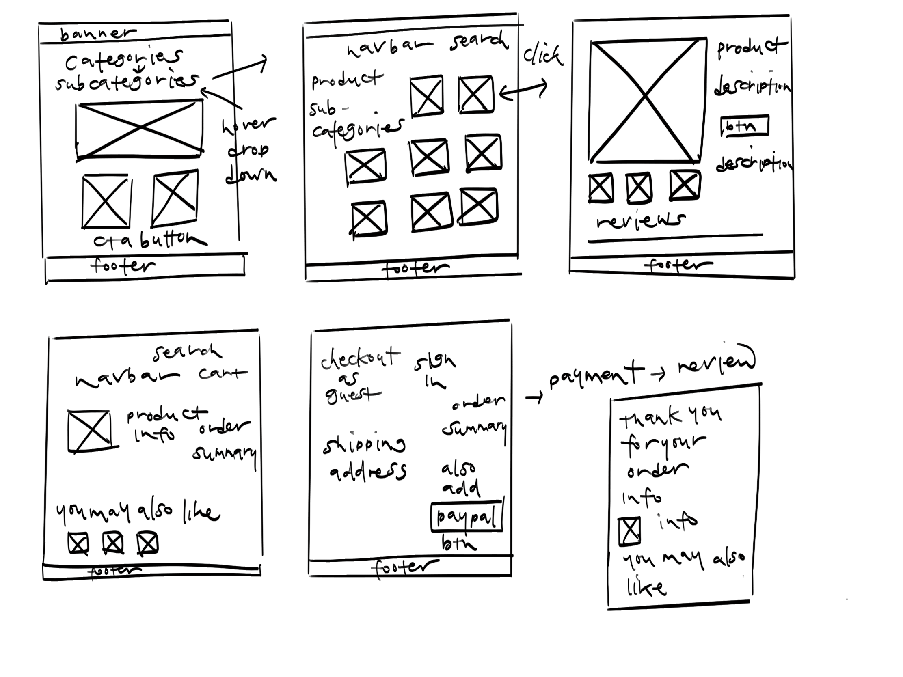

about laine
Laine - An online retail store that specializes in furniture, bedding, kitchenware, art, and more. With a modern and minimal design, the focus will be on the products on the site. Laine is creating a clean, uncluttered shopping experience for those who love all things home and beauty.
My Roles
Research, Responsive & Visual Design, Prototype, Branding
Challenge
Design a responsive e-commerce store that eases the customer’s checkout process while creating an elegant shopping experience that can increase sales and set my company ahead of the competitors.

research
I first created a survey to see what users were missing when they shopped online. I wanted to create an e-commerce website that is super simple to use but also designed to showcase the product in the most elegant and minimal way.
After the initial survey, came the competitive and SWOT analysis to get a better understanding of what works and what doesn’t when it comes to online retail shopping.
personas
After the survey, I picked three potential users and asked them more in depth questions about what they wanted in an e-commerce store. I was able to see what their specific goals were when it came to shopping online for home goods, furniture, and the like. Most users wanted to have items curated for them. May it be similar items from their previous orders, items that they reviewed or had as their favorite. By simply signing in, they would have options built just for them.
GOALS
- Wants to see more styled images for inspiration and ideas
- Likes to be in the know of what’s trending
- To conveniently favorite her items that she likes and wants to purchase
GOALS
- To get ideas and inspiration for her own home
- A one stop shop to buy gifts, home goods, and more
- Quick and easy shipping and return
GOALS
- To find products that are carefully curated to look like it’s one-of-a-kind
- Loves to be the first to find unique, quirky items
- To browse and navigate the page with ease
- Shows items that she might like from her previous purchases
competitive
analysis
While there are many competitors out there who specialize in home goods, I wanted to focus on three that I believe would be the most comparable to Laine. Anthropologie, Leif, and Poketo stood out amongst the crowd. All three companies position themselves as unique, vintage-inspired, design-heavy homegood stores that are geared towards the 25-45 year-old creative demographic.

user flow
Before getting into wireframes and designing a paper prototype of the website, I had to figure out the user flow first. This allowed me to be conscious of how the users would be able to easily navigate and reach their final destination. I focused on how to make the checkout experience straightforward and effortless all while optimizing sales.

wireframes
After creating multiple user flows and sketches, I was ready to create low-fidelity wireframes in Balsamiq. For the homepage, I wanted to see where I would add CTA buttons to allow users to search for things they might like. I did a couple of iterations where I centered the CTA buttons, and some that were either right or left aligned. For most users, the center had the most successful click-through rate. I also needed to figure out the sign-in process for new and returning users. I needed to make sure that it was simple and accessed within a couple of clicks; Filling in very few inputs, shoppers could be in and out when it came to shopping at Laine.


branding
For the logo, I wanted to do calligraphy or hand lettering. I envisioned a minimal, modern look, similar to that of the products being sold.. I started off with a couple of sketches, most of which were cursive, calligraphy typography. Afterwards, I researched possible fonts I could utilize. Ultimately, I decided to use a font as the base, but gave it character by tightening the letters, and giving it some depth.
I was inspired by dusty rose as the main color palette for Laine. It has the rustic yet minimal feel that I believe Laine best represents. With this color palette in mind, I wanted keep it consistent with muted grays and pops of black and white allowing the product to really shine, and making the website as a whole feel comforting.

mockups
+ prototype
With the prototype, I was able to get a better understanding of what worked and what didn’t. I made adjustments on how to make the site flow better and took every comment and piece of feedback to make sure I had a clean, simple, easy to use website for consumers to shop and checkout with ease.

user testing
After setting up my prototype on Invision, I had potential users test the website to see what worked and what needed to be changed. I watched as the user would flow through the prototype and took notes on where the user navigated to and how they got there. I gained insight on what the difficulties were and ultimately what the user thought of the product.


what I
learned
Overall, I learned how important alignment is to make sure a website looks clean and organized. I have a better understanding of E-commerce and the importance of CTA buttons, above the fold placement of images, and minimizing inputs so that users feel safe and validated when they make a purchase from the site. I also learned how important user testing is to make sure you have a viable product that consumers would want to use.